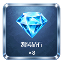
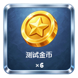
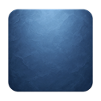
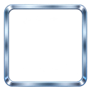

交付版本：v002。仅重制本任务，保留上一版本，不派发下游任务。


绘制顺序：背景层 → 图标层 → 文本层 → 框体层。每层均为独立 128×128 透明通道图片。




| 目录或文件 | 用途 |
|---|---|
| source/ | 四张实际生图原件 |
| layers/ | 背景、两种图标、两种文本、框体 |
| preview/ | 两张独立完整效果图 |
| generation.json | 生成工具、提示词、来源说明与绘制顺序 |
| validation.json | 尺寸、透明像素与文件校验值 |
| export.ps1 | 可重现的尺寸导出、文字排版和分层合成 |
八张导出图片均为 128×128，框体中心透明；已查看两张完整效果图。背景、图标和框体均使用 imagegen 实际生成。文字使用确定性排版，避免生图文字失真。
本交付为当前对话单项制作，不冒充固定 art-01 的云执行记录。未更新 Track 运行状态或启动其他任务；未进行 Unity 导入、九宫格拉伸、正式动态长文本及大数量运行验收。